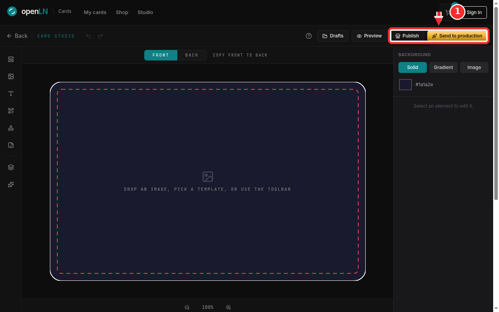

How to design a card in the Card Studio
The Card Studio is where you design a custom NFC card and then decide what happens to it. You can publish the design to the catalog, where anyone can order it and you earn a share of every sale, or send it straight to production so the card is printed and shipped just for you. This guide is a tour of the whole screen: the tools, the canvas, and the two ways to finish. You can open the studio at cards.openln.com/studio, or click Studio in the top navigation of the cards site. Everything happens in your browser, nothing to install.
- You are signed in. The studio opens without an account, but drafts and both finishing paths ask for a signed-in account, so sign in at the top right first and your work is tied to you from the start.
- You have your artwork ready if you want your own image on the card: any photo or logo file on your device will do. If you do not, that is fine too, you can start from a template or the toolbar.
- Nothing is charged while you design. Money is involved only when you order cards, at checkout.
The studio at a glance
Start at the top right of the page, where the red arrow marked 1 points. That is the Sign in button. Press it and sign in before you get going: Drafts asks for a signed-in account before it shows anything, the studio keeps each account's work separate, and both ways of finishing ask you to sign in as well. Signing in from the start means the drafts you save now are waiting for you when you come back.
Below the site navigation sits the studio's own bar. On the left: Back to leave the studio, the CARD STUDIO label, the undo and redo arrows, and a help button (the question mark icon). On the right are the four actions you will use from here on: Drafts, Preview, Publish and Send to production. The red box in the screenshot sits around the last two, because those are the two ways to finish a design, and the paragraphs below explain each in turn.

In the middle of the screen is the card itself, the area you actually design on. Above it, FRONT and BACK switch which side you are editing, and each side keeps its own elements and background. Next to them, Copy front to back copies everything you have put on the current side onto the other one; the wording flips to Copy back to front when you are working on the back. On a fresh card you will see the prompt: drop an image, pick a template, or use the toolbar. Any image file you drag from your computer onto the canvas lands on the card, ready to move and resize. The white line is the trim edge, exactly where the card is cut, and the red dashed line is the safe area, so keep text and logos inside it. Both guides show only while you edit; they never appear in previews, exports, or the printed card.
Down the left edge runs the toolbar: Templates, Image, Add text, Add QR code, Shapes (rectangle, ellipse, triangle and line), Stickers, then Layers and Brand kit. Hover any button to see its name. At the bottom is the zoom row: minus and plus to zoom out and in, and the percentage in the middle. Click the percentage to snap back to 100%.
On the right is the properties panel. With nothing selected it reads Select an element to edit it. and shows the BACKGROUND controls for the side you are on. Solid gives the card a flat color, and the field under it shows the current value (the screenshot shows #1a1a2e); click it to open a color picker. Gradient blends two colors at an angle you choose. Image lets you upload a picture as a full background. Click any element on the card and this panel switches to that element's own controls, position, size, colors, and so on.
Publish is the path for designs you want to sell. It saves your work and takes you to a publish page: give the design a name, set your royalty in sats, and it goes live in the catalog, where it joins the community designs anyone can order. Buyers pay the card cost plus your royalty, and your share is paid to your Lightning address on every sale. Publishing needs a signed-in account and a Lightning Address to receive royalties, and if you do not have one saved yet, the page asks you for it right there.
Send to production is the path for cards for yourself or your business. It first runs a print check: is the front empty, is anything sitting outside the safe area, is any image too low in resolution, and is the back included. If everything is fine, confirm, and the studio saves the design and takes you to checkout. There you pick the quantity, from a single card up to a batch of 50 (the selector offers 1, 2, 3, 5, 10, 20 and 50), enter where to ship it, and pay in sats. The card is printed and sent to you, and it is made to order, so a batch is simply a larger quantity of the same design.
The other two buttons on the top bar round out the workday. Drafts is where you save the design you are on with a name of your choosing, and load or delete earlier ones; the studio also autosaves as you go, so nothing is lost if you close the tab. Preview opens a dialog with the front and back as they will look, hides the guides, and offers a PNG download, plus another button into Send to production once you are happy.
- Live numbers. The counts you see around the catalog, how many cards have been minted, how much has been paid to creators, and each design's own sale count, come from a live snapshot of the shop's data. They change as orders come in, so a number you noted yesterday may be different today.
- Where drafts live. Drafts and the autosave are kept in the browser you are working in, separated per account. Sign in before you start, keep using the same browser, and your work is where you left it.
- What costs what. Designing is free and publishing is free. You pay only when you order cards: checkout totals the card and the printing, adds shipping, and takes payment in sats over Lightning.